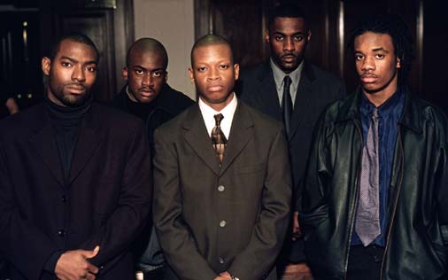
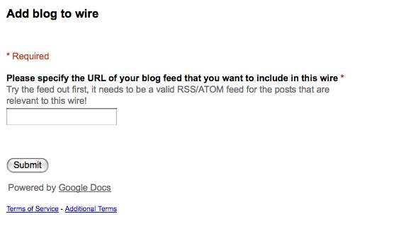

The Wire (pre alpha) – aggregate blog posts and comments
by P
Yesterday was one of those great open source days for me. The idea that there is a global community of smart and creative people who share ideas openly and help each other is powerful, but also a little abstract. But when you reach out, and the community responds and makes it all happen, it’s a wonderful experience that reaffirms the possibility of togetherness. That’s how I felt when The Wire moved from an abstract idea to pre-alpha. Putting the love aside for a second, let’s get to business.

Thanks to Jim Groom and Joss Winn and Hans Poldoja (neither one is in the picture) for conversations about a combined blog-aggregator/discussion-forum that would be really useful to follow the kinds of disaggregated discussions that take place in many open education courses (like this one, this one, or this recent Mozilla/Creative Commons one). It’s one of those things, that we all felt was so obviously useful that it just had to exist … but it didn’t. So with a little help from my friends (and some new friends) we built it, in one day.
The Wire (pre-alpha) is a simple way of keeping track of what’s going
on in a course discussion. It’s like a content stream that aggregates
discussions which take place across many blogs. When readers click on
the post or comment headings, they are taken straight to the original
blogs. What neat about is that it brings together posts and their comments.
This version is built with google forms, yahoo pipes, a bit of open standards and you can roll your own in an hour or less (or much less if you are Tony Hirst). An example is at http://p2pu.pbworks.com/Wire, a pbwiki site we have been using for some peer 2 peer university tech prototyping.
Here is how it works. I created a google form that collects feed URLs. The form is embedded into the wiki page, which looks like this:

A yahoo pipe then collects the list of feeds via the CSV interface for google spreadsheets (Publish as a web-page, then select CSV). Here is what the link looks like: http://spreadsheets.google.com/pub?key=rkfTjEyTRbZlaJS6URg8CbA&output=csv
The pipe fetches all blog posts and all comments and does some fancy sorting to make sure it all comes out in the right order. A huge thanks to Hapdaniel “The Pickled Piper” whose yahoo pipes wizardry pulls it all together. You can get the pipe and improve it here.
If you go to the site, you can try adding your feed URL and watch it get added to The Wire (sometimes yahoo pipes needs a few moments).
It’s far from perfect and I’ll be spending more time on design aspects and various other bits. If you want to help, please leave a comment or get in touch by email.
Voila – thanks everyone for the ideas and the help, and really making my day. Hapdaniel, you rock! And special mention to my friend Tau Tavenga for introducing me to this Wire
Pingback: Wiring the syndication bus together at bavatuesdays
Pingback: The Wire. Linking aggregated posts and comments | ../learninglab/joss
Pingback: Sharing Nicely » Blog Archive » P2PU - learning from open source software (1)
Pingback: The Design of Openess » Syndication bus models
Pingback: The Design of Openess » “The Wire”